Lab9_Simple_Processor
Lab Overview
This lab aims to implement a simple, 4-instruction processor in Verilog. The top-level entity should be a structural design, and all lower-level components should be kept completely modular and use Verilog parameters. The processor should be tested in Vivado Simulator with appropriate testbench(es) that test for many cases (+/- and varying ranges).
Background
Design Overview:
Figure 1 shows the layout of the processor you will design. The processor has four inputs: DIN, CLK,RUN and RSTn. DIN is the main data input of the processor; it is an N-bit input that can be changed during the processor synthesis accordingly. We will discuss how to enable this later. Internally, it utilizes four distinct subcomponents: N-Bit Registers, an Adder, a Multiplexer, and an FSM. The registers can be divided into three groups: the instruction register, 8 data registers, and two temporary registers. The blue line represents “data-paths.” This processor has two outputs: BUS and DNE. BUS holds the output of the Multiplexer, which should be visible externally and fed back as input to the circuit’s internals. Note that the figure shows a 16-bit version of the processor, but you will need to implement it using a variable bit width.
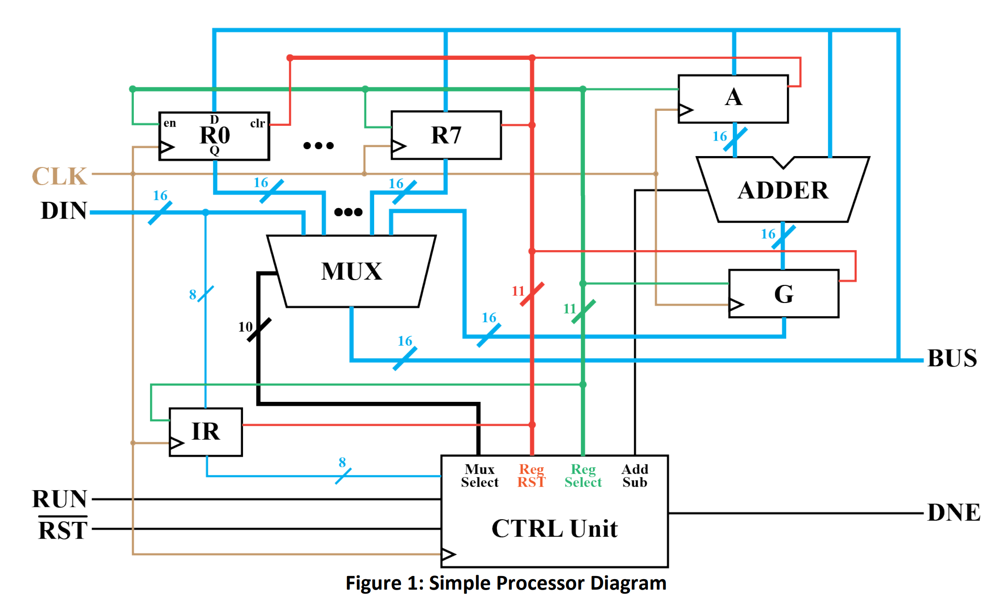
Processor Instructions and Operations:
This processor will:
-
1) wait for and read an instruction off DIN
-
2) perform the instruction. The processor will begin idle, waiting for the user to supply instructions. To do this, the user will write the instructions to DIN and then activate the RUN signal. The instruction will be saved upon the next rising edge of CLK.
-
3) Then, the processor will execute that instruction. After the instruction, the processor will activate the DNE signal for one CLK cycle. The processor will not accept another instruction until the DNE signal is activated.
The instructions will be encoded as the 8-bit value: IIXXXYYY, where II represents one of the four instructions, XXX is a binary number that represents the Xth-data register: RX, and YYY represents the Yth- data register: RY. Table 1 shows the 4 instructions you must implement.
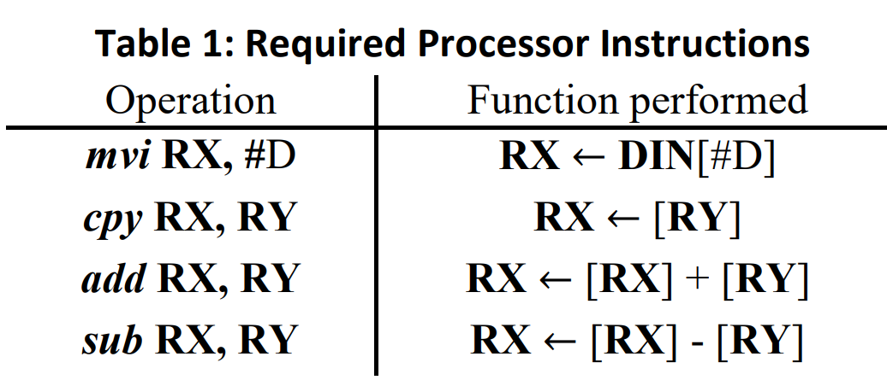
Take a second to understand what these instructions do. The operation mvi is the Move-Into instruction. It will move a value, #D, from DIN to RX. Since the instruction is being passed in through DIN as well, this requires you to update DIN with the saved value after the instruction is read. For the mvi instruction, the three least significant bits of the instruction, YYY, will simply be discarded. The cpy operation will copy the data in RY to RX. The add and sub-operations are straightforward. They will Add RX and RY or Subtract RY from RX and then store the result in RX, respectively. Notice that all these operations are destructive and will erase the data currently contained in RX.
The Control Unit:
The purpose of the control unit is to orchestrate the functionality of the other sub-components so that the intended operations are performed. It does this by configuring control signals at the proper times using an FSM. In this system, we They have a lot of control signals that can be grouped into three main categories: Register Select Lines, Multiplexer Select Lines, and a Computation Select Signal.
The AddSub signal is only one signal from the controller designed to select which type of mathematical computation the processor is conducting. It aims to tell the adder whether it is performing addition or subtraction.
There are 11 register select lines coming from the controller, one for each register in the system. One of these lines is fed in as an enable signal to each of the registers in the processor. Notice that we do not want all registers to save their inputs on each clock pulse. As such, it will be the responsibility of the control unit to coordinate when each register saves by driving these lines when appropriate.
Finally, there are 10 multiplexer select lines: 1 for DIN, 1 for G and 8 for the data registers. These lines will determine which of the 10 multiplexer inputs are fed to the data BUS. Unlike the previous multiplexers you’ve designed, we will use a 1-hot encoding for this system to simplify the controller design.
A major source of error in this lab is this control unit. As you’re designing the FSM, approach it from the perspective. It sets up the control signals for the next CLK edge rather than the current state.
Routing Data through the system:
The multiplexer decides what data (DIN, RX/RY, G) is chosen to be on the BUS. DIN should be the default output Selected by the multiplexer when idle. The BUS will transfer data to RX/RY, A, the adder’s second input, and the output. You will be able to observe the data transfers on the output as the execution of an operation occurs. Then, upon completion of the operation, the result will be visible on the output, and Done will be asserted for one clock cycle.
The control unit will receive the instruction and drive the Register Select Lines, Multiplexer Select Lines, and a Computation Select Signal to perform the appropriate operation. It will do this through the use of an FSM. You must design a Mealy state machine to control these internal signals.
The processor will start idle, waiting for the RUN signal to be asserted externally. On the first rising clock edge observed while the RUN signal is active, the least significant 8-bits of DIN will be saved to the instruction register, IR. This register should not be updated again until the next instruction is loaded. The control unit will then progress through the steps required to compute the operation specified by the instruction. Not all instructions will require the same number of clock cycles to execute. See the Figure below for details.
As an example, the execution of the mvi operation is fairly straightforward. After accepting the instruction, it should select DIN to be output to the BUS using the Multiplexer Select Line and activate the Register Select Line for RX. This will set up the processor so that the next clock pulse DIN will be saved to RX. Note that this requires two clock pulses, the first to save the instruction and the second to save DIN to RX. Between these clock pulses DIN should be updated with the value to be saved.
We leave it to you to figure out the exact functionality of the design while performing the other operations, but provide the following figure as a guide.
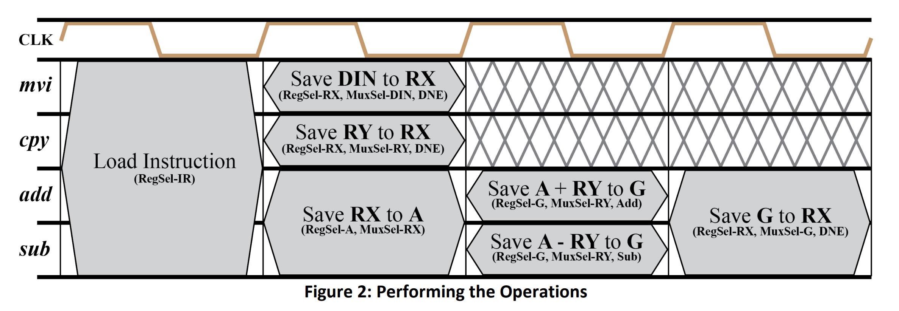
Verilog Implementation:
From Figure 1 and Figure 2, we can design some subcomponents like registers_enabled, add_sub, Mux_hot and CTRL_unit.
Add the source file
reg_enabled.v
// Define a parameterized register module with enable control.
// This module can be used for registers of any size as specified by the parameter N.
module reg_enabled #(
parameter N=8 // Parameter N defines the width of the data input and output. The default is 8 bits.
)(
input clk, // Clock input: Used to synchronize the data transfer on the rising edge.
input rst, // Reset input: When high (positive edge detected), it resets the output to 0.
input enable, // Enable input: When high, allows data to be latched from din to dout.
input [N-1:0] din, // Data input: The data to be latched into the register when enabled.
output reg [N-1:0] dout // Data output: The current value stored in the register.
);
// Sequential logic block: Sensitive to the rising edge of the clock or reset signal.
always @(posedge clk or posedge rst)
begin
if(rst) // Check if reset signal is high.
dout <= 0; // Asynchronously reset the output to 0.
else if (clk == 1) begin // Check if the clock signal is high (redundant due to posedge clk trigger).
if(enable) // Check if the enable signal is high.
dout <= din; // Latch the input data into the output register.
end
end
endmodule
This module can be used for all registers.
add_sub.v
// Module definition for a parameterized adder-subtractor.
// This module can perform either addition or subtraction based on the addsub control signal.
module add_sub #(
parameter N = 8 // Parameter N defines the width of the data inputs and output. Default is 8 bits.
)(
input addsub, // Control input: Determines operation mode (0 for addition, 1 for subtraction).
input [N-1:0] x0, // First input operand.
input [N-1:0] x1, // Second input operand.
output reg [N-1:0] result // Output: Result of the operation, either x0 + x1 or x0 - x1.
);
// Combinational logic block: Sensitive to changes in the inputs.
always @(*) begin
if (addsub == 0)
result = x1 + x0; // Perform addition when addsub is 0.
else
result = x0 - x1; // Perform subtraction when addsub is 1.
end
endmodule
Mux_hot.v
// Define a parameterized hot-one (one-hot) multiplexer module. This type of multiplexer selects one
// of the multiple input signals to pass to the output based on a one-hot encoding scheme.
module Mux_hot #(
parameter N = 8 // Parameter N defines the width of the data inputs and output. Default is 8 bits.
)(
input [9:0] select, // One-hot select signal, determines which input to pass to the output.
input [N-1:0] s0, // Input signal 0
input [N-1:0] s1, // Input signal 1
input [N-1:0] s2, // Input signal 2
input [N-1:0] s3, // Input signal 3
input [N-1:0] s4, // Input signal 4
input [N-1:0] s5, // Input signal 5
input [N-1:0] s6, // Input signal 6
input [N-1:0] s7, // Input signal 7
input [N-1:0] din, // Default input signal (used when no valid select is active)
input [N-1:0] g, // Additional input signal (for example purposes)
output reg [N-1:0] result // Output signal, selected from one of the inputs based on 'select'
);
// Combinational logic to determine the output based on the 'select' signal
always @(*)
begin
case (select)
10'b0000000001: result <= din; // When select line is 0000000001, output is 'din'
10'b0000000010: result <= s0; // When select line is 0000000010, output is 's0'
10'b0000000100: result <= s1; // When select line is 0000000100, output is 's1'
10'b0000001000: result <= s2; // When select line is 0000001000, output is 's2'
10'b0000010000: result <= s3; // When select line is 0000010000, output is 's3'
10'b0000100000: result <= s4; // When select line is 0000100000, output is 's4'
10'b0001000000: result <= s5; // When select line is 0001000000, output is 's5'
10'b0010000000: result <= s6; // When select line is 0010000000, output is 's6'
10'b0100000000: result <= s7; // When select line is 0100000000, output is 's7'
10'b1000000000: result <= g; // When select line is 1000000000, output is 'g'
default: result <= din; // Default case, output is 'din' if no valid select
endcase
end
endmodule
CTRL_unit.v
// Module definition for a control unit with parameterizable width, N.
module CTRL_unit #(
parameter N = 8 // Bit width of the instruction and data paths.
)(
input clk, // Clock input.
input rst, // Asynchronous reset input.
input run, // Input signal to start the operation.
input [N-1:0] instruction, // Instruction input, determining the operation.
output reg [9:0] select_mux, // Control signal for multiplexer selection.
output reg [10:0] select_reg, // Control signal for register selection.
output reg A, // Auxiliary control signal, usage depends on context.
output reg done // Signal indicating completion of an operation.
);
// State machine variables and declarations.
reg [3:0] state, next_state; // Current and next state definitions.
localparam idle = 2'd0, // State definitions for readability.
R_M = 2'd1,
add_sub = 2'd2,
last = 2'd3;
// State transition logic: triggered on clock or reset.
always @(posedge clk or negedge rst) begin
if (!rst)
state <= idle; // Reset to idle state.
else
state <= next_state; // Transition to the next state.
end
// Next state logic and output logic based on current state and inputs.
always @(*) begin
case (state)
idle: begin
// In idle state, transition to R_M state if 'run' is high, else stay in idle.
if (run == 1'b1)
next_state = R_M;
else
next_state = idle;
end
R_M: begin
// In R_M state, decide next state based on the instruction's upper bits.
if (instruction[7:6] == 2'b10 || instruction[7:6] == 2'b11)
next_state = add_sub;
else
next_state = idle;
end
add_sub: begin
// In add_sub state, always transition to last state next.
next_state = last;
end
last: begin
// In last state, transition back to idle.
next_state = idle;
end
default: begin
// Default case: go back to idle if an unknown state is encountered.
next_state = idle;
end
endcase
end
// Combinational logic for next state determination and control signal generation.
always @(*) begin
case (state)
idle: begin
// In idle state, set default control signals and check if 'run' is activated.
select_mux = 10'b0000000001; // Default selection for multiplexer.
select_reg = 11'b00000000001; // Default selection for register or functional unit.
A = 1'b0; // Default state for auxiliary control signal A.
done = 1'b0; // Indicate that the operation is not done.
end
R_M:
begin
if(instruction[7:6]==2'b00) //the first instruction mvi
begin
A = 1'b0;
done = 1'b1;
case(instruction[5:3])
3'b000: select_reg = 11'b00000000010;
3'b001: select_reg = 11'b00000000100;
3'b010: select_reg = 11'b00000001000;
3'b011: select_reg = 11'b00000010000;
3'b100: select_reg = 11'b00000100000;
3'b101: select_reg = 11'b00001000000;
3'b110: select_reg = 11'b00010000000;
3'b111: select_reg = 11'b00100000000;
default: select_reg = 11'b00000000000;
endcase
select_mux = 11'b0000000001;
end
else if(instruction[7:6]==2'b01)// the second instruction cpy
begin
A = 1'b0;
done = 1'b1;
case(instruction[5:3])
3'b000: select_reg = 11'b00000000010;
3'b001: select_reg = 11'b00000000100;
3'b010: select_reg = 11'b00000001000;
3'b011: select_reg = 11'b00000010000;
3'b100: select_reg = 11'b00000100000;
3'b101: select_reg = 11'b00001000000;
3'b110: select_reg = 11'b00010000000;
3'b111: select_reg = 11'b00100000000;
default: select_reg = 11'b00000000000;
endcase
case(instruction[2:0])
3'b000: select_mux = 10'b0000000010;
3'b001: select_mux = 10'b0000000100;
3'b010: select_mux = 10'b0000001000;
3'b011: select_mux = 10'b0000010000;
3'b100: select_mux = 10'b0000100000;
3'b101: select_mux = 10'b0001000000;
3'b110: select_mux = 10'b0010000000;
3'b111: select_mux = 10'b0100000000;
default: select_mux = 10'b0000000000;
endcase
end
else if(instruction[7:6]==2'b10) // the add instruction
begin
A = 1'b0;
done = 1'b0;
select_reg = 11'b01000000000;
case(instruction[5:3])
3'b000: select_mux = 10'b0000000010;
3'b001: select_mux = 10'b0000000100;
3'b010: select_mux = 10'b0000001000;
3'b011: select_mux = 10'b0000010000;
3'b100: select_mux = 10'b0000100000;
3'b101: select_mux = 10'b0001000000;
3'b110: select_mux = 10'b0010000000;
3'b111: select_mux = 10'b0100000000;
default: select_mux = 10'b0000000000;
endcase
end
else // the sub instruction
begin
A = 1'b1;
done = 1'b0;
select_reg = 11'b01000000000;
case(instruction[5:3])
3'b000: select_mux = 10'b0000000010;
3'b001: select_mux = 10'b0000000100;
3'b010: select_mux = 10'b0000001000;
3'b011: select_mux = 10'b0000010000;
3'b100: select_mux = 10'b0000100000;
3'b101: select_mux = 10'b0001000000;
3'b110: select_mux = 10'b0010000000;
3'b111: select_mux = 10'b0100000000;
default: select_mux = 10'b0000000000;
endcase
end
end
add_sub: // this state corespond to the Save A +/- RY to G part
begin
if(instruction[7:6]==2'b10)
begin
A = 1'b0;
done = 1'b0;
select_reg = 11'b10000000000;
case(instruction[2:0])
3'b000: select_mux = 10'b0000000010;
3'b001: select_mux = 10'b0000000100;
3'b010: select_mux = 10'b0000001000;
3'b011: select_mux = 10'b0000010000;
3'b100: select_mux = 10'b0000100000;
3'b101: select_mux = 10'b0001000000;
3'b110: select_mux = 10'b0010000000;
3'b111: select_mux = 10'b0100000000;
default: select_mux = 10'b0000000000;
endcase
end
else
begin
A = 1'b1;
done = 1'b0;
select_reg = 11'b10000000000;
case(instruction[2:0])
3'b000: select_mux = 10'b0000000010;
3'b001: select_mux = 10'b0000000100;
3'b010: select_mux = 10'b0000001000;
3'b011: select_mux = 10'b0000010000;
3'b100: select_mux = 10'b0000100000;
3'b101: select_mux = 10'b0001000000;
3'b110: select_mux = 10'b0010000000;
3'b111: select_mux = 10'b0100000000;
default: select_mux = 10'b0000000000;
endcase
end
end
last: // this state corespond to the Save G to RX
begin
if(instruction[7:6]==2'b10)
A = 1'b0;
else
A = 1'b1;
done = 1'b1;
case(instruction[5:3])
3'b000: select_reg = 11'b00000000010;
3'b001: select_reg = 11'b00000000100;
3'b010: select_reg = 11'b00000001000;
3'b011: select_reg = 11'b00000010000;
3'b100: select_reg = 11'b00000100000;
3'b101: select_reg = 11'b00001000000;
3'b110: select_reg = 11'b00010000000;
3'b111: select_reg = 11'b00100000000;
default: select_reg = 11'b00000000000;
endcase
select_mux = 10'b1000000000; //choose the G register
end
default:
begin
select_mux = 10'b0000000000; // Reset multiplexer selection.
select_reg = 11'b00000000000; // Reset register selection.
A = 1'b0; // Reset auxiliary control signal.
done = 1'b0; // Reset operation completion indicator.
end
endcase
end
endmodule
The system processor unit contains the above modules. system_processor.v
// Define a system processor module with parameterizable width N.
// This module simulates a simple processing unit with various registers and operations.
module system_processor #(
parameter N = 16 // Define the data width for the system.
)(
input clk, // Clock input for synchronization.
input rst, // Global reset signal.
input reg_rst, // Register reset signal.
input Run, // Control signal to start the processor.
input [N-1:0] DIN, // Data input port.
output [N-1:0] reg0, // Output from register 0.
output [N-1:0] reg1, // Output from register 1.
output [N-1:0] reg2, // Output from register 2.
output [N-1:0] Bus_data, // Data bus used for internal and external data communication.
output Done // Signal indicating completion of operation.
);
// Internal wire declarations.
wire [7:0] save_instruction; // Wire to hold instruction from instruction register.
wire [N-1:0] reg3; // Additional internal registers.
wire [N-1:0] reg4;
wire [N-1:0] reg5;
wire [N-1:0] reg6;
wire [N-1:0] reg7;
wire [N-1:0] a; // Wire for temporary storage used in operations.
wire [N-1:0] g; // General purpose register or calculation result storage.
wire [N-1:0] add_result; // Result of addition or subtraction operation.
wire add_ctrl; // Control signal for addition or subtraction.
wire [10:0] reg_ctrl; // Control signals for register enable.
wire [9:0] select_mux; // Multiplexer selection signal.
// Module instantiations
// Instruction Register
reg_enabled #(.N(8)
) IR (
.clk(clk),
.rst(reg_rst),
.enable(reg_ctrl[0]),
.din(DIN[7:0]),
.dout(save_instruction)
);
// Data Registers instantiation for storing and manipulating data
// Each Data_X module represents a register which can be used to store data from the Bus_data.
reg_enabled #(.N(8)) Data_1 (.clk(clk), .rst(reg_rst), .enable(reg_ctrl[1]), .din(Bus_data), .dout(reg0));
reg_enabled #(.N(8)) Data_2 (.clk(clk), .rst(reg_rst), .enable(reg_ctrl[2]), .din(Bus_data), .dout(reg1));
// Additional data registers Data_3 to Data_8 follow similar pattern as Data_1 and Data_2
reg_enabled #(.N(8)) Data_3 (.clk(clk), .rst(reg_rst), .enable(reg_ctrl[3]), .din(Bus_data), .dout(reg2));
reg_enabled #(.N(8)) Data_4 (.clk(clk), .rst(reg_rst), .enable(reg_ctrl[4]), .din(Bus_data), .dout(reg3));
reg_enabled #(.N(8)) Data_5 (.clk(clk), .rst(reg_rst), .enable(reg_ctrl[5]), .din(Bus_data), .dout(reg4));
reg_enabled #(.N(8)) Data_6 (.clk(clk), .rst(reg_rst), .enable(reg_ctrl[6]), .din(Bus_data), .dout(reg5));
reg_enabled #(.N(8)) Data_7 (.clk(clk), .rst(reg_rst), .enable(reg_ctrl[7]), .din(Bus_data), .dout(reg6));
reg_enabled #(.N(8)) Data_8 (.clk(clk), .rst(reg_rst), .enable(reg_ctrl[8]), .din(Bus_data), .dout(reg7));
// Arithmetic Control Register - Controls input to the arithmetic unit.
reg_enabled #(.N(8)) A_ctrl (.clk(clk), .rst(reg_rst), .enable(reg_ctrl[9]), .din(Bus_data), .dout(a));
// General register - Could be used for various purposes, here for storing arithmetic results.
reg_enabled #(.N(8)) g_ctrl (.clk(clk), .rst(reg_rst), .enable(reg_ctrl[10]), .din(add_result), .dout(g));
// Arithmetic Unit - Performs addition or subtraction based on add_ctrl signal.
add_sub #(.N(N)) addition (.addsub(add_ctrl), .x0(a), .x1(Bus_data), .result(add_result));
// Multiplexer - Selects one of several input data sources to output onto the Bus_data based on select_mux.
Mux_hot #(.N(N)) Mux (.select(select_mux), .s0(reg0), .s1(reg1), .s2(reg2), .s3(reg3), .s4(reg4), .s5(reg5), .s6(reg6), .s7(reg7), .din(DIN), .g(g), .result(Bus_data));
// Control Unit - Controls the processor's operation including instruction decoding and generating control signals.
CTRL_unit #( .N(N)) Ctrl_test (.clk(clk), .rst(rst), .run(Run), .instruction(save_instruction), .select_mux(select_mux), .select_reg(reg_ctrl), .A(add_ctrl), .done(Done));
endmodule
We will map clk port to the button, so we also need the debouncing module like below:
btn_run.v
// Define a module for a button-controlled run interface, integrating with a system processor.
module btn_run #(
parameter N = 8 // Define the data width for the system.
)(
input clk, // Clock input for synchronization.
input rst, // Global reset signal.
input reg_rst, // Register reset signal.
input key, // Input signal from a physical button.
input run, // Control signal to start the processor.
input [N-1:0] DIN, // Data input port.
output [N-1:0] reg0, // Output from register 0.
output [N-1:0] reg1, // Output from register 1.
output [N-1:0] reg2, // Output from register 2.
output [N-1:0] Bus_data, // Data bus used for internal and external data communication.
output Done // Signal indicating completion of operation.
);
// Internal signal declarations for debouncing logic.
wire key_pulse; // Pulse signal generated after key debounce.
reg [7:0] key_buffer; // Buffer to store the state of the key for debouncing.
reg key_reg; // Register to hold the debounced key value.
// Debounce logic for the key input.
always @(posedge clk or negedge rst) begin
if (!rst)
key_reg <= 1'd0; // Reset the key register.
else begin
if (key == 1'd1)
key_reg <= 1'd1; // Set the key register if the key input is high.
else
key_reg <= 1'd0; // Clear the key register if the key input is low.
end
end
integer i;
// Buffer to hold the debounced key value for detecting edges.
always @(posedge clk or negedge rst) begin
if (!rst)
key_buffer <= 8'd0; // Reset the key buffer.
else begin
for (i = 0; i < 8; i = i + 1) begin
// Fill the buffer based on the debounced key value.
if (key_reg == 1'd1)
key_buffer[i] <= 1'd1; // Set buffer bits if key is pressed.
else
key_buffer[i] <= 1'd0; // Clear buffer bits if the key is not pressed.
end
end
end
// Generate a single cycle pulse when the key is pressed.
assign key_pulse = key_buffer & 8'hff;
// Instantiate the system_processor module with the debounced key_pulse signal.
system_processor #(.N(8)
) System(
.clk(key_pulse), // Use the debounced key pulse as the clock input.
.rst(rst),
.reg_rst(reg_rst),
.Run(run),
.DIN(DIN),
.reg0(reg0),
.reg1(reg1),
.reg2(reg2),
.Bus_data(Bus_data),
.Done(Done)
);
endmodule
Now we can see the Schematic under the RTL ANALYSIS part like below:
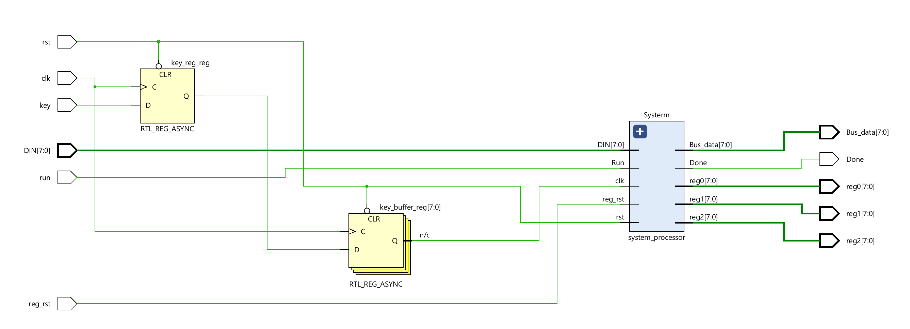
For the system module, we can see:
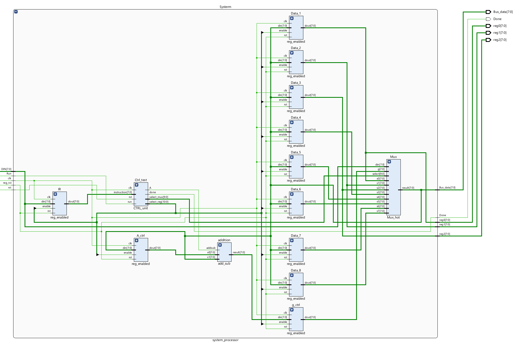
Then we can run Simulation to check the code of the system_processor module.
tb.v
// Testbench for the system_processor module
module tb();
parameter N = 8; // Data width for the test
// Define testbench signals
reg clk;
reg rst;
reg reg_rst;
reg run;
reg [N-1:0] DIN;
wire [N-1:0] Bus;
wire Done;
wire [N-1:0] reg0;
wire [N-1:0] reg1;
wire [N-1:0] reg2;
// Instantiate the system_processor module with test signals
system_processor #(
.N(N)
) test (
.clk(clk),
.rst(rst),
.reg_rst(reg_rst),
.Run(run),
.DIN(DIN),
.Bus_data(Bus),
.reg0(reg0),
.reg1(reg1),
.reg2(reg2),
.Done(Done)
);
// Initial block begins here
initial begin
$display("Running testbench"); // Print simulation start message
// Initialize inputs
clk <= 1'b0; // Initial clock state
run <= 1'b0; // Begin with run not active
rst <= 1'b0; // Begin with system not reset
reg_rst <= 1'b1; // Begin with register reset active
DIN <= 8'b00000000; // Initialize data input to zero
#20; // Wait for 20 time units
rst <= 1'b1; // Release system reset
reg_rst <= 1'b0; // Release register reset
#20; // Wait for 20 time units
// Test sequence starts here
// Move (00) 85 to reg 0 (000)
DIN <= 8'b00000000; // Specify target register (example instruction)
run <= 1'b1; // Signal to start the operation
#20;
clk <= 1'b1;
#20;
DIN <= 85; // Load value into target register (assumed operation)
run <= 1'b0; // End the operation
#40; // Wait for the operation to complete
clk <= 1'b0;
#20;
clk <= 1'b1;
#20;
// Move (00) 20 to reg 1 (001)
clk <= 1'b0;
DIN <= 8'b00001000;
run <= 1'b1;
#20;
clk <= 1'b1;
#20;
DIN <= 20;//H14
run <= 1'b0;
clk <= 1'b0;
#20;
clk <= 1'b1;
#20;
// Move (01) reg 0 (000) to reg 2 (010)
clk <= 1'b0;
DIN <= 8'b01010000;
run <= 1'b1;
#20;
clk <= 1'b1;
#20;
run <= 1'b0;
clk <= 1'b0;
#20;
clk <= 1'b1;
#20;
// add (10)reg 1 (001) to reg 2 (010)
clk <= 1'b0;
DIN <= 8'b10010001;
run <= 1'b1;
#20;
clk <= 1'b1;
#20;
run <= 1'b0;
clk <= 1'b0;
#20;
clk <= 1'b1;
#20;
clk <= 1'b0;
#20;
clk <= 1'b1;
#20;
clk <= 1'b0;
#20;
clk <= 1'b1;
#20;
//// // sub(11) reg 2 (010) to reg 0 (000)
clk <= 1'b0;
DIN <= 8'b11010000;
run <= 1'b1;
#20;
clk <= 1'b1;
#20;
run <= 1'b0;
clk <= 1'b0;
#20;
clk <= 1'b1;
#20;
clk <= 1'b0;
#20;
clk <= 1'b1;
#20;
clk <= 1'b0;
#20;
clk <= 1'b1;
#20;
end
endmodule
We can run a Simulation to check the code by clicking the Run Simulation under SIMULATION and choosing the first Run Behavioral Simulation. Here, the function of the clk is the same as the submit of the lab8.
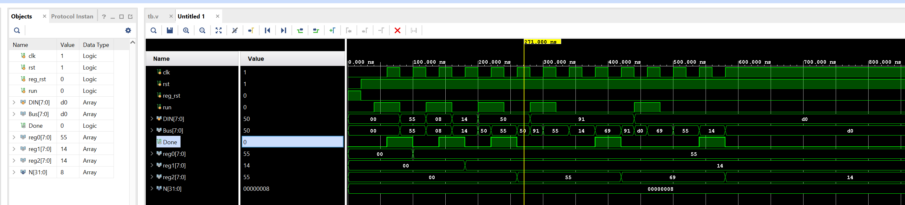
Implementation
The part can reference the Generate Bitstream in lab1.
The block design is shown below:
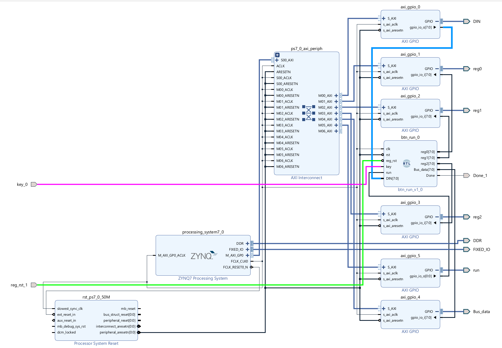
For the value of reg0 reg1 reg2 Bus_data ports can be read from the AXI_GPIO IP, and we need to write data to the run DIN input ports by AXI_GPIO and the key port will map to the button(L19) and the Done port will map to the LED(M14) of the board. Please noted that for the AXI_GPIO IP, we just need one port for the GPIO and need to select the All Outputs or All Inputs option according to the need like below:
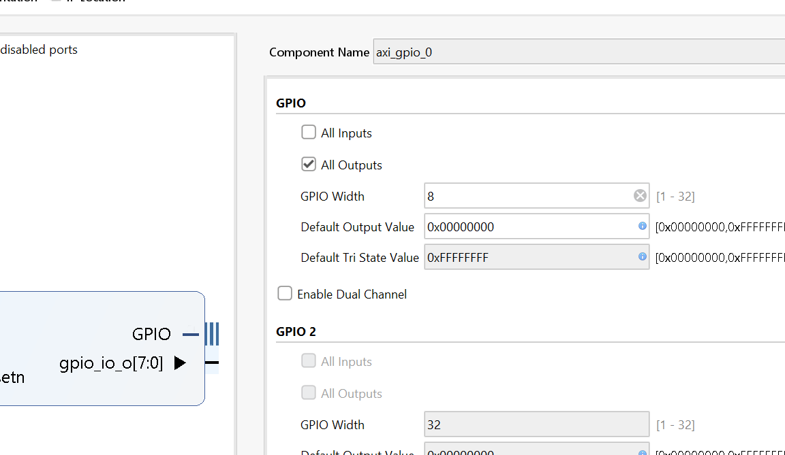
Download the bitstream file to PYNQ
We need to download the design_1_wrapper.bit to the local machine. Go to Lab9/project_1/project_1.runs/impl_1, download design_1_wrapper.bit, and upload the file to the PYNQ. And we also need to upload the design_1.hwh file which is in the Lab9/project_1/project_1.gen/sources_1/bd/design_1/hw_handoff.
from pynq import Overlay
from pynq import Bitstream
bit = Bitstream("design_1.bit")
bit.download()
bit.bitfile_name
from pynq import MMIO
GPIO_BASE_ADDRESS = 0X41200000
GPIO_RANGE = 0x1000
din_write = MMIO(GPIO_BASE_ADDRESS, GPIO_RANGE)
GPIO_BASE_ADDRESS_r = 0X41210000
GPIO_RANGE = 0x1000
reg0_read = MMIO(GPIO_BASE_ADDRESS_r, GPIO_RANGE)
reg0=reg0_read.read(0x0)
GPIO_BASE_ADDRESS_r = 0X41220000
GPIO_RANGE = 0x1000
reg1_read = MMIO(GPIO_BASE_ADDRESS_r, GPIO_RANGE)
reg1=reg1_read.read(0x0)
GPIO_BASE_ADDRESS_r = 0X41230000
GPIO_RANGE = 0x1000
reg2_read = MMIO(GPIO_BASE_ADDRESS_r, GPIO_RANGE)
reg2=reg2_read.read(0x0)
GPIO_BASE_ADDRESS_r = 0X41240000
GPIO_RANGE = 0x1000
bus_read = MMIO(GPIO_BASE_ADDRESS_r, GPIO_RANGE)
bus=bus_read.read(0x0)
GPIO_BASE_ADDRESS = 0X41250000
GPIO_RANGE = 0x1000
run = MMIO(GPIO_BASE_ADDRESS, GPIO_RANGE)
representations = {
'0': ('###', '# #', '# #', '# #', '###'),
'1': (' #', ' #', ' #', ' #', ' #'),
'2': ('###', ' #', '###', '# ', '###'),
'3': ('###', ' #', '###', ' #', '###'),
'4': ('# #', '# #', '###', ' #', ' #'),
'5': ('###', '# ', '###', ' #', '###'),
'6': ('###', '# ', '###', '# #', '###'),
'7': ('###', ' #', ' #', ' #', ' #'),
'8': ('###', '# #', '###', '# #', '###'),
'9': ('###', '# #', '###', ' #', '###'),
'.': (' ', ' ', ' ', ' ', ' #'),
}
def seven_segment(number):
# treat the number as a string, since that makes it easier to deal with
# on a digit-by-digit basis
digits = [representations[digit] for digit in str(number)]
# now digits is a list of 5-tuples, each representing a digit in the given number
# We'll print the first lines of each digit, the second lines of each digit, etc.
for i in range(5):
print(" ".join(segment[i] for segment in digits))
DATA_OFFSET = 0X0
DATA = 0x00
#write instruction is mvi (00) to reg0(000)
din_write.write(DATA_OFFSET,DATA)
run.write(DATA_OFFSET,1)
At the same time, please press the key(L19) button, you will see the LED is on, which means that the process is done.
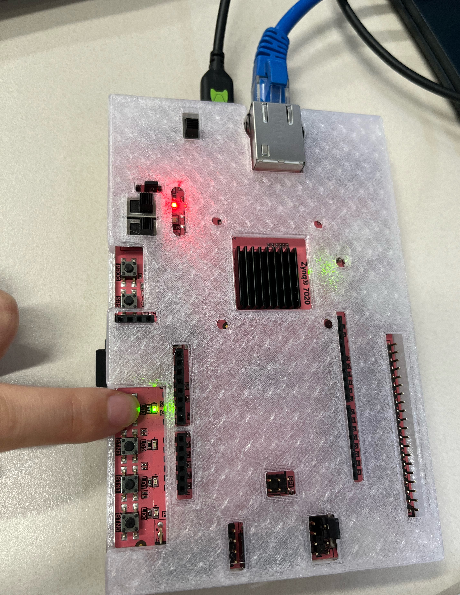
DATA_OFFSET = 0X0
DATA = 0x55
#write instruction is mvi (00) to reg1(000)
din_write.write(DATA_OFFSET,DATA)
Then press the key button again, and you will see the LED is off.
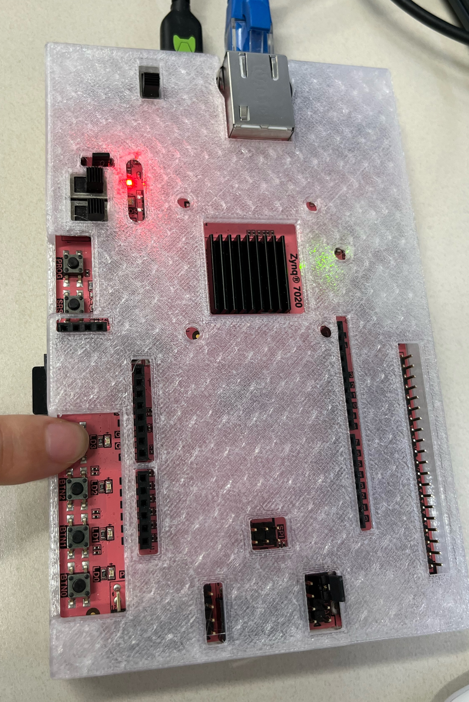
seven_segment(reg0_read.read(0x0))
We will see the value of the reg0:
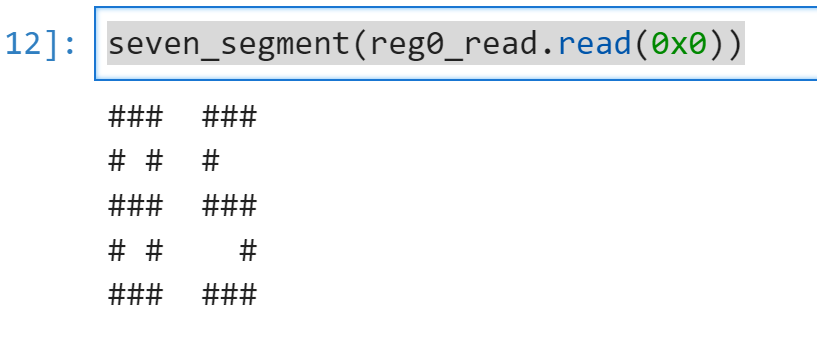
DATA_OFFSET = 0X0
DATA = 0x08
#write to the reg1
din_write.write(DATA_OFFSET,DATA)
run.write(DATA_OFFSET,1)
DATA_OFFSET = 0X0
DATA = 0x14
#write 20 to reg1
din_write.write(DATA_OFFSET,DATA)
seven_segment(reg1_read.read(0x0))
We will see the value of the reg1:
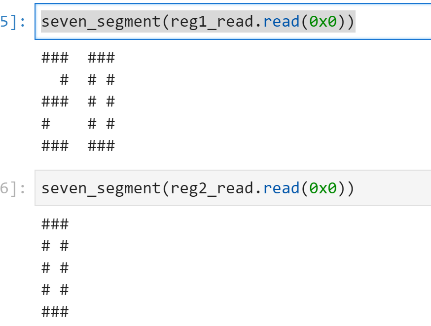
DATA_OFFSET = 0X0
DATA = 0x50
#move reg1 to reg2
din_write.write(DATA_OFFSET,DATA)
run.write(DATA_OFFSET,1)
seven_segment(reg2_read.read(0x0))
We will see the value of the reg2:
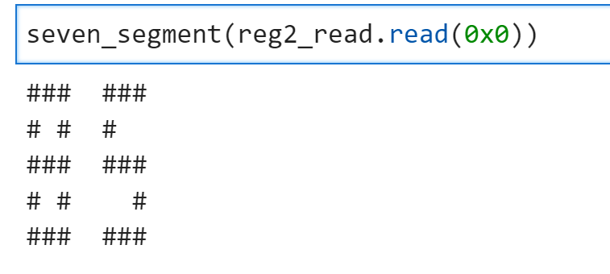
Then we will try to add and subinstructions.
DATA_OFFSET = 0X0
DATA = 0x91 #add reg2 and reg1
din_write.write(DATA_OFFSET,DATA)
run.write(DATA_OFFSET,1)
Because for the add/sub-operation, the processor will go through all states, we need to press the key button more times until you can see the LED is on, then press the button and you can see it is off.
And you will see:
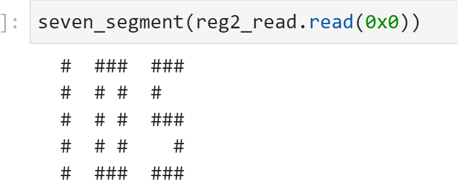
The sub instruction is the same.
DATA_OFFSET = 0X0
DATA = 0xd0 #add reg2 and reg1
din_write.write(DATA_OFFSET,DATA)
run.write(DATA_OFFSET,1)
And you can see the result of the reg2:
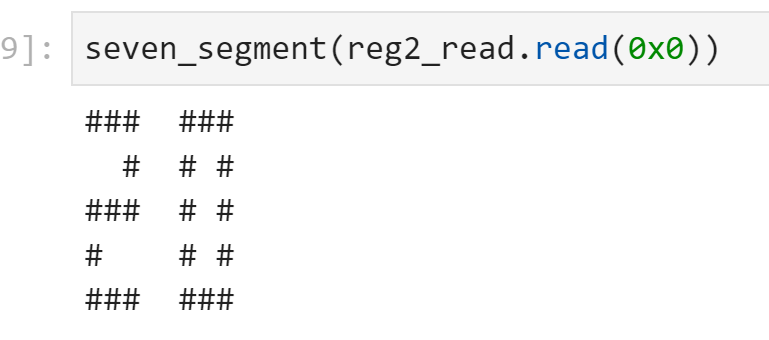